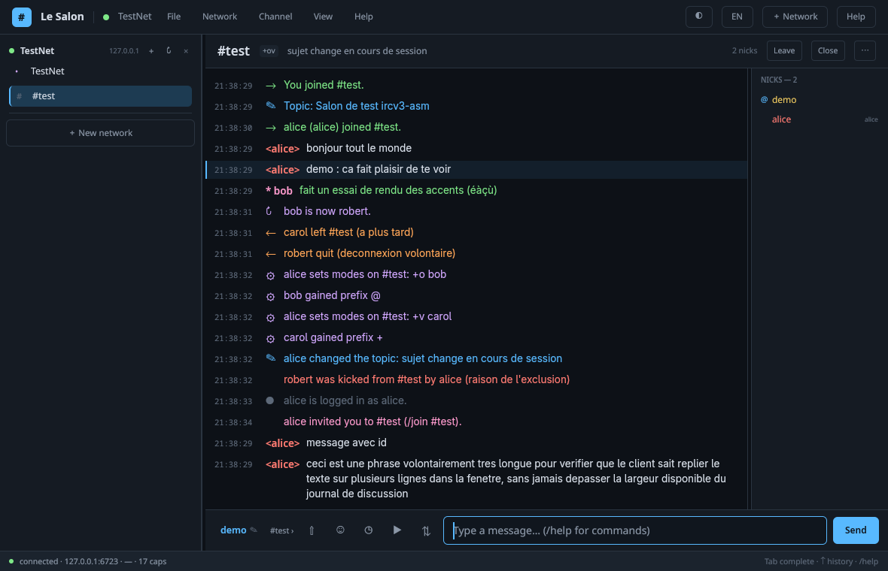
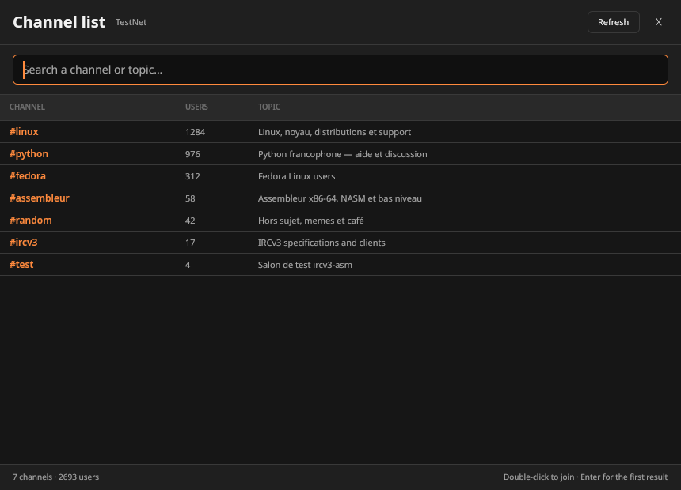

Natif. Vraiment.Native. Really.
GPUI dessine l'interface sur GPU. Démarrage immédiat, 11 Mo, aucune webview à traîner.GPUI draws the interface on the GPU. Instant startup, 11 MB, no webview to drag around.
Client IRCv3 natif · Rust + GPUI Native IRCv3 client · Rust + GPUI
Le Salon, c'est ton IRC sans la nostalgie visuelle. Une interface GPU instantanée, IRCv3 sérieux, TLS et SASL par défaut, des toasts, 19 thèmes — et zéro Electron. Le Salon is IRC without the visual nostalgia. An instant GPU interface, serious IRCv3, TLS and SASL by default, toasts, 19 themes — and zero Electron.
Open source · MIT/Apache-2.0 · zéro télémétrie Open source · MIT/Apache-2.0 · zero telemetry

Pourquoi Le SalonWhy Le Salon
Tout ce qu'on attend d'un client IRC moderne, sans les compromis qui donnent envie de fermer l'onglet.Everything you expect from a modern IRC client, without the compromises that make you close the tab.
GPUI dessine l'interface sur GPU. Démarrage immédiat, 11 Mo, aucune webview à traîner.GPUI draws the interface on the GPU. Instant startup, 11 MB, no webview to drag around.
CAP 302, SASL, server-time, chathistory, typing, multi-préfixes, plusieurs réseaux en parallèle.CAP 302, SASL, server-time, chathistory, typing, multi-prefix, multiple networks at once.
TLS + vérification du certificat, SASL bloqué sans TLS vérifié, secrets par réseau dans le trousseau.TLS + certificate verification, SASL blocked without verified TLS, per-network secrets in the system keyring.
Un popup dans le coin pendant 2, 3 ou 5 secondes. Mentions et privés, ou tous les messages — au choix.A corner popup for 2, 3 or 5 seconds. Mentions and DMs, or every message — your call.
Nuit, Océan, Forêt, Dracula, Nord, Gruvbox… et un thème Tux jaune bec / vert terminal.Night, Ocean, Forest, Dracula, Nord, Gruvbox… and a Tux theme in beak yellow and terminal green.
Thème, langue, notifications, toasts, uploads. `Ctrl+P`, menu Fichier ou tray.Theme, language, notifications, toasts, uploads. `Ctrl+P`, File menu or tray.
DCC SEND, upload litterbox avec confirmation, messages planifiés et emojis cherchables.DCC SEND, litterbox upload with confirmation, scheduled messages and searchable emojis.
Détection automatique FR/EN, bascule instantanée, messages locaux et menus traduits.Automatic FR/EN detection, instant switch, translated local messages and menus.
AperçuPreview
Journal coloré, pseudos lisibles, liste des salons instantanée. Pas de surcharge, pas de chrome inutile.Colored log, readable nicknames, instant channel list. No clutter, no useless chrome.

Nouveau en 1.7New in 1.7
Le contenu est nettoyé avant affichage, la file est bornée, et tout se désactive en un clic.Content is sanitized before display, the queue is bounded, and one click disables it all.
Contrôle totalFull control
Une fenêtre dédiée : thème, langue, notifications, toasts, durée, confirmation d'upload.A dedicated window: theme, language, notifications, toasts, duration, upload confirmation.
Nouveau thèmeNew theme
Tux mélange le noir profond, le jaune du bec, le vert du terminal et un cyan discret. Le genre de palette qui donne envie de laisser Le Salon ouvert toute la journée.Tux blends deep black, beak yellow, terminal green and a quiet cyan. The kind of palette that makes you want to leave Le Salon open all day.
SécuritéSecurity
Les protections essentielles sont actives par défaut. Les réglages dangereux sont visibles, expliqués, et ne se cachent pas.Essential protections are on by default. Dangerous settings are visible, explained, and never hidden.
InstallationInstall
Télécharge l'AppImage, rends-la exécutable, lance-la. C'est tout. Pas de compte, pas de daemon, pas de dossier caché.Download the AppImage, make it executable, run it. That's it. No account, no daemon, no hidden folder.
f664841263fe9054dd90f6d364825af1631265e423cc82c706e2ce8614767a6a
chmod +x Le-Salon-1.7.0-x86_64.AppImage
./Le-Salon-1.7.0-x86_64.AppImageVérifie le SHA-256 ci-contre et télécharge uniquement depuis la page officielle des releases. Check the SHA-256 and only download from the official releases page.
FAQ
Oui. Le code est sous licence MIT ou Apache-2.0. Pas de compte, pas d'abonnement, pas de version « pro » cachée.Yes. The code is MIT or Apache-2.0 licensed. No account, no subscription, no hidden “pro” tier.
Le développement et les tests ciblent Linux et macOS. Windows n'est pas testé ; le cœur Rust est portable mais l'interface GPUI demande encore du travail côté Windows.Development and testing target Linux and macOS. Windows is not tested; the Rust core is portable but the GPUI interface still needs work on Windows.
Dans le trousseau système (Secret Service, Keychain, Credential Manager), par couple hôte/compte. Sans trousseau disponible, repli dans config.toml en 0600, dans un dossier 0700.In the system keyring (Secret Service, Keychain, Credential Manager), per host/account. Without a keyring, a 0600 config.toml fallback inside a 0700 directory.
L'AppImage est auto-portante et se lance sans installation. Les paquets distro pourront venir plus tard ; en attendant, tu peux aussi compiler avec Cargo.The AppImage is self-contained and runs without installation. Distro packages may come later; meanwhile you can also build with Cargo.
Non : les CVE d'UnrealIRCd ou d'autres serveurs concernent le serveur, pas le client. Le Salon peut te déconnecter si le serveur tombe, mais ne peut pas exécuter de code à sa place. Utilise un serveur à jour et, pour ton IP, un bouncer ou un VPN.No: UnrealIRCd and other server CVEs concern the server, not the client. Le Salon may disconnect if the server falls over, but it cannot execute code on its behalf. Use an up-to-date server and, for your IP, a bouncer or VPN.
Prêt à revenir ?Ready to come back?
IRC n'a pas besoin d'être vieux jeu. Il a juste besoin d'un meilleur salon.IRC doesn't have to feel old. It just needs a better living room.